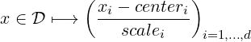

To use these functionalities, you should include pnl/pnl_basis.h.
struct _PnlBasis { /** * Must be the first element in order for the object mechanism to work * properly. This allows any PnlBasis pointer to be cast to a PnlObject */ PnlObject object; /** The basis type */ int id; /** The string to label the basis */ const char *label; /** The number of variates */ int nb_variates; /** The total number of elements in the basis */ int nb_func; /** The tensor matrix */ PnlMatInt *T; /** The sparse Tensor matrix */ PnlSpMatInt *SpT; /** The number of functions in the tensor #T */ int len_T; /** Compute the i-th element of the one dimensional basis. As a convention, (*f)(x, 0) MUST be equal to 1 */ double (*f)(double x, int i, int dim, void *params); /** Compute the first derivative of i-th element of the one dimensional basis */ double (*Df)(double x, int i, int dim, void *params); /** Compute the second derivative of the i-th element of the one dimensional basis */ double (*D2f)(double x, int i, int dim, void *params); /** PNL_TRUE if the basis is reduced */ int isreduced; /** The center of the domain */ double *center; /** The inverse of the scaling factor to map the domain to [-1, 1]^nb_variates */ double *scale; /** An array of additional functions */ PnlRnFuncR *func_list; /** The number of functions in #func_list */ int len_func_list; /** Extra parameters to pass to basis functions */ void *f_params; /** Size of params in bytes to be passed to malloc */ size_t f_params_size; /** Non linear mapping of the data */ double (*map)(double x, int dim, void *params); /** First derivative of the non linear mapping */ double (*Dmap)(double x, int dim, void *params); /** Second drivate of the linear mapping */ double (*D2map)(double x, int dim, void *params); /** Extra paramaters for map, Dmap and D2map */ void *map_params; /** Size of @p map_params in bytes to be passed to malloc */ size_t map_params_size; };
A PnlBasis is a family of multivariate functions with real values. Two different kinds of functions can be stored in these families: tensor functions — originally, this was the only possibility — and standard multivariate function typed as PnlRnFuncR.
Tensor functions are built as a tensor product of one dimensional elements. Hence, we only need a tensor matrix T to describe a multi-dimensional basis in terms of the one dimensional one. These tensors functions can be easily evaluated and differentiated twice, see pnl_basis_eval, pnl_basis_eval_vect, pnl_basis_eval_D, pnl_basis_eval_D_vect, pnl_basis_eval_D2, pnl_basis_eval_D2_vect, pnl_basis_eval_derivs, pnl_basis_eval_derivs_vect.
Three bases are already registered as listed in Table 3. A new tensor basis can be registered using the function pnl_basis_type_register.
| PNL_BASIS_CANONICAL |
| for the Canonical polynomials |
| PNL_BASIS_HERMITE |
| for the Hermite polynomials |
| PNL_BASIS_TCHEBYCHEV |
| for the Tchebychev polynomials |
The Hermite polynomials are defined by
|
|
If G is a real valued standard normal random variable, E[Hn(G)Hm(G)] = n!1 .
.
The two tensors T and SpT do actually store the same information — T(i,j) is the degree w.r.t the j-th variable in the i-th function. Originally, we were only using the dense representation T, which is far more convenient to use when building the basis but it slows down the evaluation of the basis by a great deal. To overcome this lack of efficiency, a sparse storage was added. Such a basis can be created using one of the following functions.
PnlBasis * pnl_basis_create (int index, int nb_func, int nb_variates)
Description Create a PnlBasis for the family defined by index (see Table 3 and
pnl_basis_type_register) with nb_variates variates. The basis will contain nb_func.
PnlBasis * pnl_basis_create_from_degree (int index, int degree, int
nb_variates)
Description Create a PnlBasis for the family defined by index (see Table 3 and
pnl_basis_type_register) with total degree less or equal than degree and nb_variates
variates. The total degree is the sum of the partial degrees.
For instance, calling pnl_basis_create_from_degree(index, 2, 4) is equivalent to
calling pnl_basis_create_from_tensor(index, T) where T is given by

PnlBasis * pnl_basis_create_from_prod_degree (int index, int degree, int
nb_variates)
Description Create a PnlBasis for the family defined by index (see Table 3 and
pnl_basis_type_register) with total degree less or equal than degree and nb_variates
variates. The total degree is the product of MAX(1, d_i) where the d_i are the partial
degrees.
PnlBasis * pnl_basis_create_from_hyperbolic_degree (int index, double
degree, double q, int n)
Description Create a sparse basis of polynomial with n variates. We give the example
of the Canonical basis. A canonical polynomial with n variates writes X1α1X2α2…Xnαn.
To be a member of the basis, it must satisfy  1∕q ≤degree. This kind of basis
based on an hyperbolic set of indices gives priority to polynomials associated to low
order interaction.
1∕q ≤degree. This kind of basis
based on an hyperbolic set of indices gives priority to polynomials associated to low
order interaction.
PnlBasis * pnl_basis_create_from_tensor (int index, PnlMatInt *T)
Description Create a PnlBasis for the polynomial family defined by index (see
Table 3) using the basis described by the tensor matrix T. The number of lines of T is
the number of functions of the basis whereas the numbers of columns of T is the number
of variates of the functions. Note that T is not copied inside this function but only its
address is stored, so never free T. It will be freed when calling pnl_basis_free on the
returned object. i
Here is an example of a tensor matrix. Assume you are working with three variate
functions, the basis { 1, x, y, z, x^2, xy, yz, z^3} is decomposed in the one
dimensional canonical basis using the following tensor matrix

void pnl_basis_set_from_tensor (PnlBasis *b, int index, const PnlMatInt *T)
Description Set an alredy existing basis b to a polynomial family defined by index
(see Table 3) using the basis described by the tensor matrix T. The number of lines of
T is the number of functions of the basis whereas the numbers of columns of T is the
number of variates of the functions.
Same function as pnl_basis_create_from_tensor except that it operates on an already
existing basis.
A local basis is a family of indicator functions of a Cartesian partition of [-1,1]d. Let (ni)i∈{1,…,d} be the number of interval along each direction. An element of the partition write Ak = ∏ i=1d[-1 + ki∕ni,-1 + (ki + 1)∕ni] where k is the multi-index defined by ki ∈{0,…,ni - 1} for all i ∈{1,…,d}. These functions are orthogonal; this property is used by pnl_basis_fit_ls. Note that they are not differentiable.
We provide the helper function pnl_basis_local_get_index to compute the linear representation of the multi-index k.
PnlBasis * pnl_basis_local_create (int *n_intervals, int space_dim)
Description Create a local basis with n_intervals[i - 1] intervals along dimension i
for all i ∈{1,…,space_dim}
PnlBasis * pnl_basis_local_create_regular (int n_intervals, int space_dim)
Description Equivalent to calling pnl_basis_local_create with an array of size
space_dim filled with n_intervals.
int pnl_basis_local_get_index (const PnlBasis *basis, const double *x)
Description Return the linear index of the cell containing x. It is an integer between
0 and (∏
i=1dni) - 1.
If the domain you want to consider is not [-1,1]d, use the functions pnl_basis_set_domain, pnl_basis_set_reduced and pnl_basis_set_map to map your product space into [-1,1]d.
These functions are supposed to be PnlRnFuncR.
To make this toolbox more complete, it is now possible to add some extra functions, which are not tensor product. They are stored using an independent mechanism in func_list. These additional functions are only taken into account by the methods pnl_basis_i, pnl_basis_i_vect, pnl_basis_eval and pnl_basis_eval_vect. Note in particular that it is not possible to differentiate these functions and that they are not sensitive to the isreduced attribute. To add an extra function to an existing PnlBasis, call the function
void pnl_basis_add_function (PnlBasis *b, PnlRnFuncR *f)
Description Add the function f to the already existing basis b.
PnlBasis * pnl_basis_new ()
Description Create an empty PnlBasis .
void pnl_basis_clone (PnlBasis *dest, const PnlBasis *src)
Description Clone src into dest. The basis dest must already exist before calling this
function. On exit, dest and src are identical and independent.
PnlBasis * pnl_basis_copy (const PnlBasis *B)
Description Create a copy of B.
void pnl_basis_free (PnlBasis **basis)
Description Free a PnlBasis created by pnl_basis_create. Beware that basis is the
address of a PnlBasis *.
void pnl_basis_del_elt (PnlBasis *B, const PnlVectInt *d)
Description Remove the function defined by the tensor product d from an existing
basis B.
void pnl_basis_del_elt_i (PnlBasis *B, int i)
Description Remove the i-th element of basis B.
void pnl_basis_add_elt (PnlBasis *B, const PnlVectInt *d)
Description Add the function defined by the tensor d to the Basis B.
int pnl_basis_type_register (const char *name, double (*f)(double, int, int,
void), double (*Df)(double, int, int, void), double (*D2f)(double, int, int, void), int
is_orthogonal)
Description Register a new basis type and return the index to be passed to pnl_basis_create.
The variable name is a unique string identifier of the family. The variables f, Df, D2f are the
one dimensional basis functions, its first and second order derivatives. Each of these functions
must return a double and take two arguments : the first one is the point at which evaluating
the basis functions, the second one is the index of function. The varis_orthogonal if the
elements of the basis are orthogonal for the L2 scalar product. Here is a toy example to show
how the canonical basis is registered (this family is actually already available with the
id PNL_BASIS_CANONICAL, so the following example may look a little fake)
double f(double x, int n, int dim, void *params) { return pnl_pow_i(x, n); } double Df(double x, int n, int dim, void *params) { return n * pnl_pow_i(x, n-1); } double f(double x, int n, int dim, void *params) { return n * (n-1) * pnl_pow_i(x, n-2); } int id = pnl_basis_register ("Canonic", f, Df, D2f, PNL_FALSE); /* * B is the Canonical basis of polynomials with degree less or equal than 2 in dimension 5. */ PnlBasis *B = pnl_basis_create_from_degree (id, 2, 5);
void pnl_basis_print (const PnlBasis *B)
Description Print the characteristics of a basis.
Functional regression based on a least square approach often leads to ill conditioned linear systems. One way of improving the stability of the system is to use centered and renormalized polynomials so that the original domain of interest D (a subset of ℝd) is mapped to [-1,1]d. If the domain D is rectangular and writes [a,b] where a,b ∈ ℝd, the reduction mapping is done by
| (1) |
void pnl_basis_set_domain (PnlBasis *B, const PnlVect *a, const PnlVect *b)
Description This function declares B as a centered and normalized basis as defined by
Equation 1. Calling this function is equivalent to calling pnl_basis_set_reduced with
center=(b+a)/2 and scale=(b-a)/2.
void pnl_basis_set_reduced (PnlBasis *B, const PnlVect *center, const PnlVect
*scale)
Description This function declares B as a centered and normalized basis using the
mapping
|

|
void pnl_basis_reset_reduced (PnlBasis *B)
Description Reset the reduction settings.
Note that this renormalization does not apply to the extra functions by pnl_basis_add_function but only to the functions defined by the tensor T.
It is also possible to apply a non linear map φi : ℝ →ℝ to the i-th coordinate of the input variable before the reduction operation if any. Then, the input variables are transformed according to
| (2) |
void pnl_basis_set_map (PnlBasis *B, double (*map)(double x, int i,
void*params), double (*Dmap)(double x, int i, void*params), double (*D2map)(double
x, int i, void*params), void *params, size_t size_params)
Description Define the non linear applied to the input variables before the reduction
operation. The parameters Dmap and D2map can be NULL. The three functions map,
Dmap and D2map take as second argument the index of the coordinate, while their
third argument is used to passe extra parameters defined by params.
int pnl_basis_fit_ls (PnlBasis *P, PnlVect *coef, PnlMat *x, PnlVect *y)
Description Compute the coefficients coef defined by
|
|
where N is the number of functions to regress upon and n is the number of points at which the values of the original function are known. Pj is the j -th basis function. Each row of the matrix x defines the coordinates of one point xi. The function to be approximated is defined by the vector y of the values of the function at the points x.
double pnl_basis_ik_vect (const PnlBasis *b, const PnlVect *x, int i, int
k)
Description An element of a basis writes ∏
l=0nbvariatesϕl(xl) where the ϕ’s are one
dimensional polynomials. This functions computes the therm ϕk of the i-th basis function at
the point x.
double pnl_basis_i_vect (const PnlBasis *b, const PnlVect *x, int i)
Description If b is composed of f0,…,fnb_func-1, then this function returns fi(x).
double pnl_basis_i_D_vect (const PnlBasis *b, const PnlVect *x, int i, int
j)
Description If b is composed of f0,…,fnb_func-1, then this function returns ∂xjfi(x).
double pnl_basis_i_D2_vect (const PnlBasis *b, const PnlVect *x, int i, int j1, int
j2)
Description If b is composed of f0,…,fnb_func-1, then this function returns ∂2xj1,xj2fi(x).
void pnl_basis_eval_derivs_vect (const PnlBasis *b, const PnlVect *coef, const
PnlVect *x, double *fx, PnlVect *Dfx, PnlMat *D2fx)
Description Compute the function, the gradient and the Hessian matrix of
∑
k=0ncoefkPk(⋅) at the point x. On output, fx contains the value of the function, Dfx its
gradient and D2fx its Hessian matrix. This function is optimized and performs much
better than calling pnl_basis_eval, pnl_basis_eval_D and pnl_basis_eval_D2
sequentially.
double pnl_basis_eval_vect (const PnlBasis *basis, const PnlVect *coef, const PnlVect
*x)
Description Compute the linear combination of P_k(x) defined by coef. Given
the coefficients computed by the function pnl_basis_fit_ls, this function returns
∑
k=0ncoefkPk(x).
double pnl_basis_eval_D_vect (const PnlBasis *basis, const PnlVect *coef, const
PnlVect *x, int i)
Description Compute the derivative with respect to x_i of the linear combination of
P_k(x) defined by coef. Given the coefficients computed by the function pnl_basis_fit_ls,
this function returns ∂xi ∑
k=0ncoefkPk(x) The index i may vary between 0 and
P->nb_variates - 1.
double pnl_basis_eval_D2_vect (const PnlBasis *basis, const PnlVect *coef, const
PnlVect *x, int i, int j)
Description Compute the derivative with respect to x_i of the linear combination of
P_k(x) defined by coef. Given the coefficients computed by the function pnl_basis_fit_ls,
this function returns ∂xi∂xj ∑
k=0ncoefkPk(x). The indices i and j may vary between 0 and
P->nb_variates - 1.
The following functions are provided for compatibility purposes but are marked as deprecated. Use the functions with the _vect extension.
double pnl_basis_ik (const PnlBasis *b, const double *x, int i, int k)
Description Same as function pnl_basis_ik_vect but takes a C array as the point of
evaluation.
double pnl_basis_i (PnlBasis *b, double *x, int i)
Description Same as function pnl_basis_i_vect but takes a C array as the point of
evaluation.
double pnl_basis_i_D ( const PnlBasis *b, const double *x, int i, int j )
Description Same as function pnl_basis_i_D_vect but takes a C array as the point
of evaluation.
double pnl_basis_i_D2 (const PnlBasis *b, const double *x, int i, int j1, int j2)
Description Same as function pnl_basis_i_D2_vect but takes a C array as the point
of evaluation.
double pnl_basis_eval (PnlBasis *P, PnlVect *coef, double *x)
Description Same as function pnl_basis_eval_vect but takes a C array as the point
of evaluation.
double pnl_basis_eval_D (PnlBasis *P, PnlVect *coef, double *x, int i)
Description Same as function pnl_basis_eval_D_vect but takes a C array as the
point of evaluation.
double pnl_basis_eval_D2 (PnlBasis *P, PnlVect *coef, double *x, int i, int j)
Description Same as function pnl_basis_eval_D2_vect but takes a C array as the
point of evaluation.
void pnl_basis_eval_derivs (PnlBasis *P, PnlVect *coef, double *x, double *fx,
PnlVect *Dfx, PnlMat *D2fx)
Description Same as function pnl_basis_eval_derivs_vect but takes a C array as
the point of evaluation.